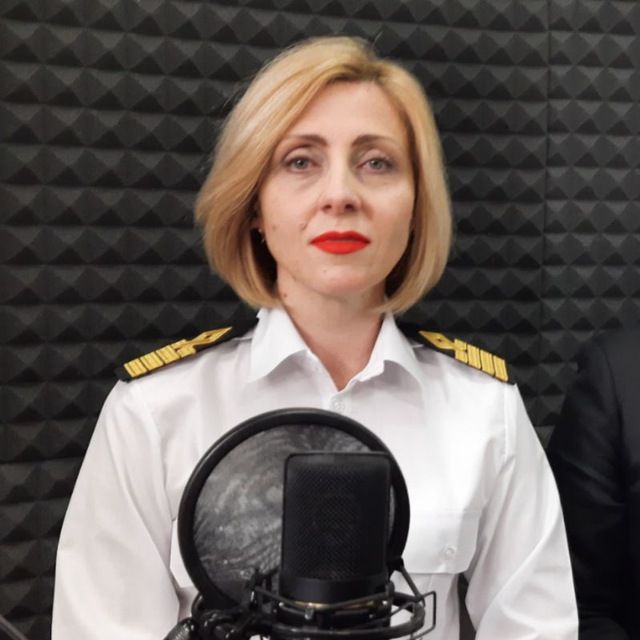
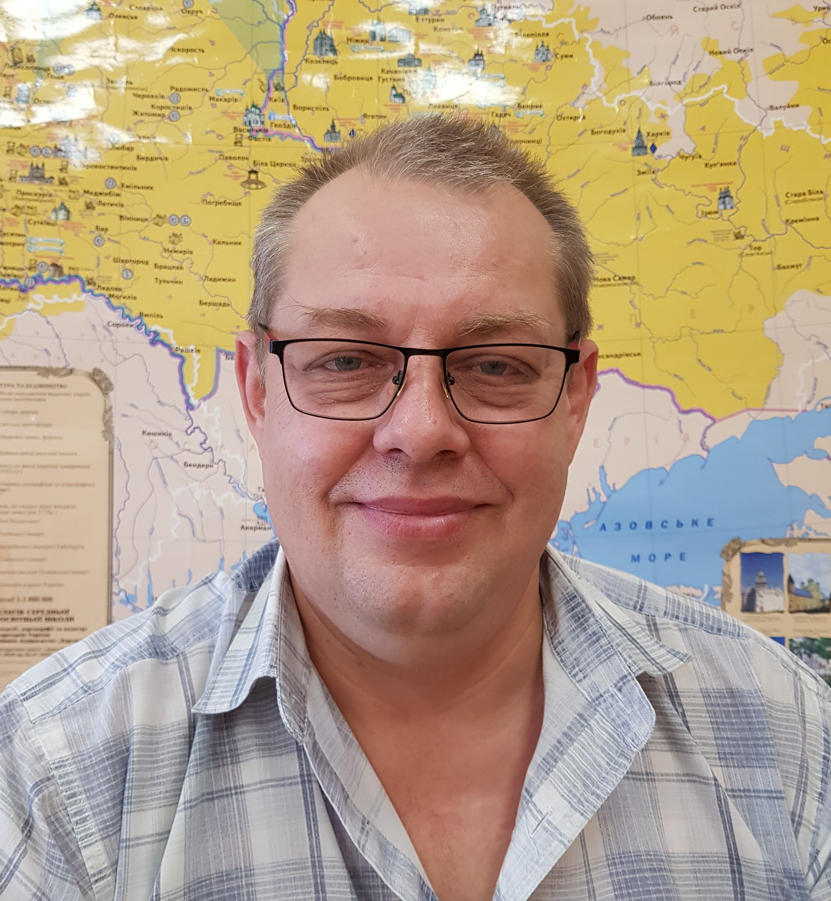

Victoria Yuriyivna Sikorska
In 1998, she graduated with honors from Odesa State University named after I.I. Mechnikov, majoring in Ukrainian language and literature. After university, she received the qualification of a philologist, teacher of Ukrainian and foreign literature. Since 1998, she has worked as a teacher, and since 2002 - as a lecturer at the First of May Educational and Scientific Center of ONU. Since 2010 - associate professor of the department of history and general disciplines, in 2007 she defended her candidate's dissertation on the topic of artistic time and space in the novels of Pavlo Zahrebelny. In 2011, she received a PhD diploma, and in 2012 - the title of associate professor. In 2013-2019, she worked at Odesa National Polytechnic University. Since 2019 - at Odesa National Maritime University, since 2020 - head of the department of pre-university training, since 2024 - head of the department of journalism and language communication. Member of the NSWU, NTSH, NGO Ukrainian Club of Odesa. Chief editor of the scientific journal Black Sea Philological Studies.

Ivan Heorhiyovych Nenov
In 1973, he graduated from Tiraspol State Pedagogical Institute and began his career as a language and literature teacher. Since 1974, he has worked at Odesa Television and Radio Company - from a television commentator to the chief editor and deputy general director. Author of television programs Television Reception, Family Album and radio broadcast At the House on Troitska. He was also the chief editor of the newspaper Odesa News. In 1997, he defended his candidate's dissertation in political science, later received the title of associate professor. In 2003-2014, he worked at the National Academy of Public Administration under the President of Ukraine, since 2018 - at Odesa National University. Member of the NSWU since 1976, member of the NSPU since 2013. Honored journalist of Ukraine (1996), Knight of the Order of the Honorary Cross (2010) and the honorary award of Saint Sophia (2012).
Alla Fedosiyivna Kovalenko

Alla Fedosiyivna is a lecturer, specialist in the field of philology and communication. She is engaged in educational and scientific activities, participates in the development of professional training of students, combining theoretical knowledge with practical experience.
Darina Fedorivna Stoyanova

Candidate of Philological Sciences, Associate Professor of the Department of Linguistics and Foreign Languages of Odesa National Maritime University. She graduated from Odesa National University named after I.I. Mechnikov, where she received a master's degree in Language and Literature (Bulgarian). In 2013, she defended her candidate's dissertation in specialty 10.02.03 - Slavic languages. In 2011-2019, she worked as a lecturer, senior lecturer and associate professor of the department of Bulgarian philology of ONU named after I.I. Mechnikov, from 2019 to 2023 - as an associate professor of the department of general and Slavic linguistics of the same university. In her teaching and scientific activities, she specializes in the methodology of teaching Ukrainian as a foreign language, other Slavic languages, the history of the development of Slavic languages, manuscript heritage, Slavic studies and the introduction of modern educational technologies. She is a member of the Center for Ukrainian-European Scientific Cooperation, the NGO Progressives and the Odesa Scientific Society of Bulgarists.

Mykola Mykolayovych
Kulachynsky
Candidate of political sciences, associate professor of the department of social sciences. In 2012, he defended his candidate's dissertation on the topic «Prospects and factors of the development of parliamentarism in the United Kingdom». The main areas of scientific activity include political institutions and processes in the United Kingdom and Ukraine. He is actively engaged in the study of problems of parliamentarism, comparative political science and the functioning of democratic systems.
Tetiana Oleksandrivna Korobko
Tetiana Oleksandrivna Korobko is an associate professor at the Odessa National Maritime University (ONMU), a scientist secretary of the Academic Council of the university. She is actively engaged in scientific and methodological activities, in particular in the field of teaching the Ukrainian language to foreign students. Among her works are educational and methodological manuals, such as «Practical course of Ukrainian language», «Development of culture of oral and written speech», «Ukrainian language by professional orientation in test tasks» and «Country studies». As a scientist secretary, she coordinates the activities of the Academic Council of ONMU, contributing to the development of scientific and educational work of the university.

Liudmyla Serhiivna Didur
Senior lecturer of the department of journalism and language communication of ONMU. Master of Philology, specialist in the field of Ukrainian language and literature. The sphere of scientific interests includes the language situation and language policy of Ukraine, language identity, intercultural business communication and Ukrainian terminology. Since 2021, she has been teaching at the university, and since 2023, she has been in the position of senior lecturer. Participant of scientific events and a member of the NGO «University of Leadership and Innovation».

Nataliia Ivanivna Kurasova
Graduated from the Donetsk State Technical University (specialty «International Economics») and the Hogeschool van Utrecht (bachelor's degree in «Finance and Credit»). In 2016, she received a qualification as a teacher of English language and foreign literature at the Horlivka Institute of Foreign Languages. She worked as an English language teacher at a comprehensive school №31 (2016-2021). Since September 2021, she has been a lecturer at the department of pre-university training of the Odessa National Maritime University. Member of the NGO «Center for Ukrainian-European Scientific Cooperation» and the «International Foundation of Scientists and Educators» (IESF).

Viktoriia Petrovna Nohai
Graduated from the Odessa State University named after I. I. Mechnikov (specialty «Ukrainian language and literature»). She worked as a teacher of Ukrainian language and literature at schools in Odessa. From 2002 to 2005, she worked at the Odessa Regional Institute of Public Administration of the National Academy of Public Administration under the President of Ukraine as a leading specialist and methodologist. From 2005 to 2021, she was a lecturer at the Odessa National Economic University. Since 2021, she has been a senior lecturer at the department of journalism and language communication of the Odessa National Maritime University. Scientific interests: linguistics, language and social communication. Active participant of scientific conferences. Member of the Center for Ukrainian-European Scientific Cooperation and the working group on language standardization of toponyms.

Anna Milkovskaya
Graduated from school in Snihurivka in 2023. Soon after graduation, she started working as a laboratory assistant at the Odessa National Maritime University. Actively gaining experience, demonstrating responsibility and striving for professional development.
Kristina Byanova